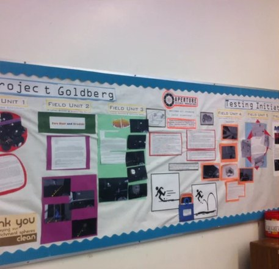

Instructional Design
Creating and executing effective lessons and units of study.

I facilitated faculty training for the adoption of various SaaS (Software as a Service) and PaaS (Platform as a Service) tools during Professional Learning Community (PLC) professional development sessions by designing user-friendly guides and providing hands-on activities.
Relationships first
As an instructional designer and trainer, I put relationships at the center of the work: with employees, with site and regional leaders, and with the clients they serve. Rather than leaning on oversight from some distant office, I build training around layered accountability that local teams can run themselves: clear expectations, simple check-ins, and leaders who know how to coach to them. Teams become more self-sufficient and more connected to each other, which helps people stay, and every compliance standard and client expectation still gets met.
The right tool, the right format, the right audience
I've administered, built in, or taught with a wide range of learning platforms: Workday and Tovuti for corporate learning records and onboarding; Opus for mobile-first frontline training; Canvas, Google Classroom, and Edmodo in the classroom; and Edgenuity for online coursework and credit recovery. That range is the point: no single LMS or authoring tool fits every job. I help teams find the right one for the content, the learners, and the budget, whether that's a polished self-paced course in Articulate Rise, a short video, a printable job aid, or a quick game to review before a shift. (See every tool I use on my resume.)
Matching the format to the audience is a challenge I rise to, and honestly one I enjoy. New hires working through required compliance training need a longer course, but broken into short, focused lessons they can finish between tasks, come back to later, and tie to real situations on the job; adults learn best when they can see why something matters and put it to use right away. A busy supervisor who needs a refresher on one procedure is better served by a two-minute video or a one-page job aid. Seasoned staff get scenarios and real choices instead of slides they already know. It all comes down to connecting with people and meeting them where they are, so every learning experience fits the time, attention, and experience they actually bring.
Working smarter with AI
I use AI throughout the design process, not to replace the thinking but to speed up everything around it: outlining, first drafts, and checking content against the source material. I also use agentic AI workflows (AI agents that carry out repeatable, multi-step tasks), paired with shared templates and style guides, to standardize and speed up content creation across a whole team. It's a big part of how our team builds three times as many e-courses per designer as before, without cutting quality.
Real-looking people who don't exist
Training needs faces: new-hire badges, uniform standards, “spot the problem” scenarios. Photos of real employees bring privacy questions, release forms, and turnover (the person in the picture leaves next month). So for many visuals I generate people with AI, then pair them with real site photos and client-approved assets where those matter. Fake people means no real exposure, and I can show exactly the detail a lesson needs: the correct uniform, a badge worn the right way, two different roles side by side.


Making the case for AI tools
When our team wanted a coding-capable AI assistant, I wrote the business case for IT and information security. Rise 360's new code block meant we could build custom quizzes, simulations, branching scenarios, and games right inside a course, but only our most technical designers could write that code, and it took days. With an AI assistant, any designer could describe an interaction in plain language and have a working draft in hours, build it once as a reusable template, and check it for accessibility (keyboard navigation, labels, contrast) before it shipped. The same approach powers the small HTML/JavaScript tools I build to parse and chart training-completion reports, which run entirely on a local machine or SharePoint, so no learner data ever leaves the building or passes through an AI.
The proposal covered security (single sign-on, certifications, data that isn't used for training, audit logs) and a small 30 to 60 day pilot with measured time savings.
Technology adoptions
- Ditto, ClassroomScreen, and Gimkit: successful long-term adoption with Allen Independent School District.
- Remind: successful 4-year adoption with Allen ISD.
- Quizlet and NearPod: successful 2-year adoptions with Allen ISD.
- ClassDojo: successful 2-year adoption with North Slope Borough School District.
Interactive lessons with NearPod
By incorporating multimedia elements (videos, quizzes, polls, and collaborative activities), NearPod facilitates active participation. Through this dynamic approach, I witnessed remarkable results in student comprehension and retention of a variety of skills and concepts, with post-lesson assessments consistently revealing high levels of understanding and improved academic performance.
Sample lessons
- NearPod activity: Editing & Revising
- NearPod activity: Using Transitions
- NearPod activity: Storytelling with Rhythm, Rhyme, and Verse
- NearPod activity: Moral Dilemmas
- Gather.Town demo: Types of Cyber Threats
Try my sample e-learning courses: compliance, safety, de-escalation, policy, and software training built in Articulate Rise 360, like the C-TPAT Import Container Security Training and Heat Safety.